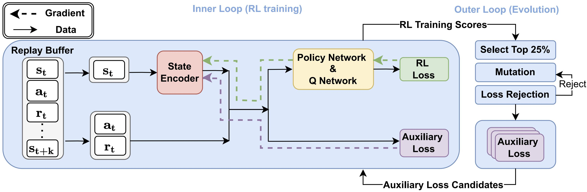
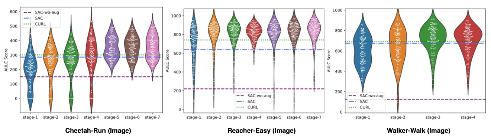
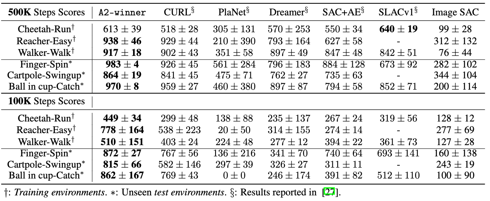
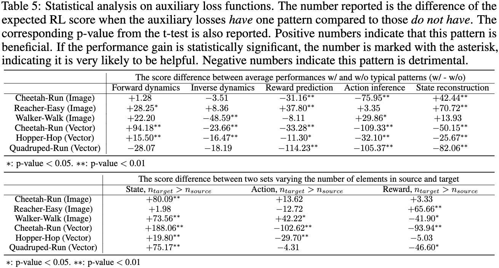

Reinforcement Learning with Automated Auxiliary Loss Search
Arxiv: https://arxiv.org/abs/2210.06041
Code: https://github.com/microsoft/AutoRL-Research
Authors
- Tairan He (Shanghai Jiao Tong University) whynot@sjtu.edu.cn
- Yuge Zhang (Microsoft Research Asia) yuge.zhang@microsoft.com
- Kan Ren (Microsoft Research Asia) renkan@shanghaitech.edu.cn
- Minghuan Liu (Shanghai Jiao Tong University) minghuanliu@sjtu.edu.cn
- Che Wang (New York University) chewang@nyu.edu
- Weinan Zhang (Shanghai Jiao Tong University) wnzhang@sjtu.edu.cn
- Yuqing Yang (Microsoft Research Asia) yuqyang@microsoft.com
- Dongsheng Li (Microsoft Research Asia) dongsli@microsoft.com
Abstract
A good state representation is crucial to solving complicated reinforcement learning (RL) challenges. Many recent works focus on designing auxiliary losses for learning informative representations. Unfortunately, these handcrafted objectives rely heavily on expert knowledge and may be sub-optimal.
In this paper, we propose a principled and universal method for learning better representations with auxiliary loss functions, named Automated Auxiliary Loss Search (A2LS), which automatically searches for top-performing auxiliary loss functions for RL. Specifically, based on the collected trajectory data, we define a general auxiliary loss space of size $7.5 \times 10^{20}$ and explore the space with an efficient evolutionary search strategy.
Empirical results show that the discovered auxiliary loss (namely, A2-winner) significantly improves the performance on both high-dimensional (image) and low-dimensional (vector) unseen tasks with much higher efficiency, showing promising generalization ability to different settings and even different benchmark domains. We conduct a statistical analysis to reveal the relations between patterns of auxiliary losses and RL performance.
A2LS Algorithm Overview
The overall idea of our A2LS algorithm is to automatically search for better auxiliary losses for RL.
A2LS contains an inner loop (left) and an outer loop (right). The inner loop performs an RL training procedure with searched auxiliary loss functions. The outer loop searches auxiliary loss functions using an evolutionary algorithm to select the better auxiliary losses.
Evolution Results
We evaluate the performance of population of auxliary losses druing evolution. The overall AULC scores of the population continue to improve when more stages come in.
Searched Results
To evaluate the searched auxiliary loss (namely A2-winner), we compare A2-winner with baseline methods as follows.
A2-winner greatly outperforms other baseline methods on most tasks, including unseen test environments. This implies that A2-winner is a robust and effective auxiliary loss for image-based continuous control tasks to improve both the efficiency and final performance.
Analysis
We analyze all the loss functions we have evaluated during the evolution procedure as a whole dataset in order to gain some insights into the role of auxiliary loss in RL performance.
The statistical analysis reveals the relations between patterns of auxiliary losses and RL performance.